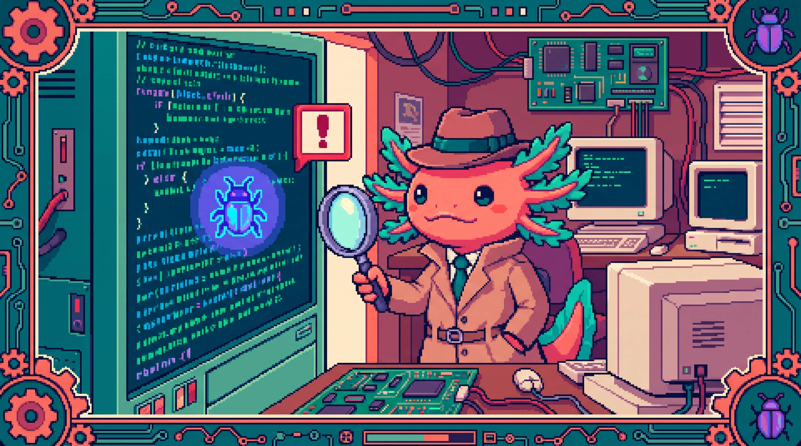

Capitulo 13 — Errores y depuracion

Hola otra vez, soy Bit, tu ajolote programador. Hoy toca un tema que pone nervioso a casi todo el que empieza: los errores. Pero te confio un secreto de ajolote: el error no es tu enemigo, es un mensaje que te dice justo lo que hay que arreglar. Un buen programador no es el que nunca se equivoca, sino el que sabe leer sus errores y resolverlos sin perder la calma. Cuando termines este capitulo vas a mirar la consola roja sin que te tiemble la mano. Respira hondo, que empezamos.
Cuando escribimos JavaScript, antes o despues el programa falla: una pantalla que no carga, un boton que no reacciona, un texto que aparece como undefined. Es lo normal, le pasa a todo el mundo. Lo que de verdad importa es tener herramientas para encontrar el problema (depurar) y para manejarlo (controlar el error) sin que se venga abajo la aplicacion entera. Lo vemos con calma, paso a paso.
1. ¿Que es un error y por que aparece?
Un programa no es mas que una lista de instrucciones. Cuando una de esas instrucciones le pide al navegador algo imposible o esta mal escrita, el navegador detiene esa parte del codigo y lanza un error.
🟦 ¿Que significa? — Error (en programacion)
Un error es un aviso que JavaScript genera cuando no puede ejecutar una instruccion. Para que sirve: te avisa de que algo salio mal y, casi siempre, te dice en que linea. Donde se usa en un repo real: en
tunal-digital, si enmain.jsllamas a una funcion que no existe o tocas una propiedad de algo vacio, el navegador lanza un error y el resto del script puede dejar de correr.🟦 ¿Que significa? — Consola (Console)
La consola es una ventana dentro de las herramientas del navegador donde aparecen los mensajes de tu programa: los textos que tu imprimes y los errores que JavaScript lanza. Para que sirve: es tu tablero de diagnostico. Donde se usa en un repo real: mientras pruebas el chat IA de
tunal-digital, abres la consola para ver si la peticion al Worker respondio bien o fallo.
Para abrir la consola en casi cualquier navegador tienes dos caminos: pulsa F12, o haz clic derecho sobre la pagina, elige Inspeccionar y luego ve a la pestaña Console.
💡 Tip
Acostumbrate a tener la consola abierta SIEMPRE mientras programas en el navegador. Es como conducir sin perder de vista el tablero del auto: muchos problemas asoman ahi mucho antes de volverse grandes.
2. Los tres errores que mas veras: SyntaxError, ReferenceError, TypeError
JavaScript tiene varios tipos de error, y cada uno lleva su propio nombre. Ese nombre te adelanta la categoria del problema, asi que conviene conocerlos. Vamos con los tres que mas vas a encontrar.
🟦 ¿Que significa? — SyntaxError
Un SyntaxError (error de sintaxis) ocurre cuando el codigo esta mal escrito segun las reglas del lenguaje: un parentesis sin cerrar, una coma de mas, una llave que falta. Para que sirve: te avisa de que el navegador ni siquiera pudo entender tu codigo. Donde se usa en un repo real: si en
main.jsdetunal-digitalolvidas cerrar un}de una funcion, el archivo entero no corre y veras un SyntaxError.
// SyntaxError: falta cerrar el parentesis
function saludar(nombre {
console.log("Hola " + nombre);
}
// Uncaught SyntaxError: missing ) after argument list
🟦 ¿Que significa? — ReferenceError
Un ReferenceError ocurre cuando usas un nombre que no existe: una variable o funcion que nunca declaraste, o que escribiste mal. Para que sirve: te indica que el navegador busco ese nombre y volvio con las manos vacias. Donde se usa en un repo real: en
tunal-digital, si escribesenviarFormularo()en vez deenviarFormulario(), JavaScript no encuentra esa funcion y lanza un ReferenceError.
// ReferenceError: usamos algo que no existe
console.log(mensaje);
// Uncaught ReferenceError: mensaje is not defined
🟦 ¿Que significa? — TypeError
Un TypeError ocurre cuando un valor no es del tipo que esperabas: intentas llamar como funcion algo que no lo es, o leer una propiedad de
nulloundefined. Para que sirve: te avisa de que el dato existe, pero no se puede usar de esa forma. Donde se usa en un repo real: entunal-digital, sidocument.querySelector(".chat")no encuentra el elemento, devuelvenull, y al hacer.addEventListener(...)sobrenullsalta un TypeError.
// TypeError: el elemento no existe (es null)
const boton = document.querySelector("#no-existe");
boton.addEventListener("click", abrirChat);
// Uncaught TypeError: Cannot read properties of null (reading 'addEventListener')
🟦 ¿Que significa? — null y undefined
nulles un valor que significa "vacio a proposito";undefinedsignifica "esto no tiene valor todavia". Para que sirve: representan la ausencia de un dato. Donde se usa en un repo real: enRachaSimple(React + TypeScript), mientras los datos del usuario cargan desde Supabase con TanStack Query, una variable puede estarundefineddurante un instante; si la usas sin comprobarla, salta un TypeError.⚠️ Cuidado
El TypeError que mas atrapa a quien empieza es "Cannot read properties of null/undefined". Casi siempre quiere decir una de dos cosas: "buscaste algo en el HTML y no lo encontre" o "ese dato todavia no ha llegado". Antes de usar un valor, asegurate de que de verdad existe.
3. Leer el stack: el mapa hacia el error
Cuando ocurre un error, la consola no se limita al mensaje: tambien te muestra el stack trace, que es donde esta el oro.
🟦 ¿Que significa? — Stack trace (rastro de la pila)
El stack trace es la lista de funciones que se estaban ejecutando en el momento del error, desde la mas reciente hacia atras, con el archivo y la linea de cada una. Para que sirve: te dice donde explotó el error y como llego hasta ahi. Donde se usa en un repo real: en
Faro/Organizer(Next.js + TypeScript), si la llamada a OpenAI falla, el stack te muestra la cadena de funciones hasta el punto exacto del fallo.
Asi se lee un mensaje de error tipico:
Uncaught TypeError: Cannot read properties of null (reading 'value')
at enviarFormulario (main.js:42)
at HTMLButtonElement.<anonymous> (main.js:88)
Se lee de arriba hacia abajo:
1. Primera linea: el tipo de error (TypeError) y el mensaje.
2. at enviarFormulario (main.js:42): donde fallo de verdad — funcion enviarFormulario, archivo main.js, linea 42. Ahi es donde miras primero.
3. Linea siguiente: quien la llamo — un boton al que le hiciste clic.
💡 Tip
Empieza siempre por la linea mas alta que sea de TU codigo. Si el stack menciona archivos de librerias (React, TanStack), saltatelos y busca la primera linea que sea tuya, como
main.js:42.🔎 En tu codigo
En
tunal-digital, abremain.js, provoca un error a proposito (por ejemplo, escribe mal el nombre de una funcion de atajo) y observa el stack en la consola. Practica leer el numero de linea y abrir esa misma linea en tu editor.
4. try / catch / throw: manejar errores sin caerse
A veces ya sabes de antemano que algo puede fallar: una peticion a internet, un dato que quiza no llegue. En esos casos no te interesa que toda la pagina se rompa; lo que quieres es capturar el error y reaccionar con elegancia. Justo para eso existe try...catch.
🟦 ¿Que significa? — try...catch
try...catches una estructura que ejecuta un bloque de codigo "arriesgado" dentro detry; si algo falla, en vez de detener todo, salta al bloquecatch, donde tu decides que hacer. Para que sirve: evita que un error tumbe la app entera y te deja mostrar un mensaje amable. Donde se usa en un repo real: entunal-digital, elfetchal Worker de IA va dentro de untry...catchpara que, si no hay internet, el chat muestre "intenta de nuevo" en lugar de quedarse congelado.
async function preguntarIA(texto) {
try {
const respuesta = await fetch("https://worker.tunal/chat", {
method: "POST",
body: JSON.stringify({ mensaje: texto }),
});
const datos = await respuesta.json();
return datos.respuesta;
} catch (error) {
console.error("Fallo la peticion al Worker:", error);
return "Lo siento, no pude responder. Intenta de nuevo.";
}
}
🟦 ¿Que significa? — Bloque catch y el objeto error
El bloque
catch (error)recibe un objeto que describe lo que fallo. Ese objeto traeerror.message(el texto del problema) yerror.name(el tipo de error). Para que sirve: te da los detalles para registrar o mostrar el fallo. Donde se usa en un repo real: enFaro/Organizer, al analizar un proyecto con IA, elcatchregistraerror.messagepara saber si fallo Supabase, GitHub u OpenAI.🟦 ¿Que significa? — throw
throwlanza un error a proposito. Tu mismo creas el error y lo "arrojas" para detener la ejecucion y avisar de una condicion invalida. Para que sirve: validar datos y obligar a que alguien mas (uncatch) los maneje. Donde se usa en un repo real: enFaro/Organizer, si falta una variable de entorno necesaria para OpenAI, el codigo del servidor puede hacerthrow new Error("Falta la API key")para no seguir adelante con datos incompletos.
function dividir(a, b) {
if (b === 0) {
throw new Error("No se puede dividir entre cero");
}
return a / b;
}
try {
dividir(10, 0);
} catch (error) {
console.error(error.message); // No se puede dividir entre cero
}
🟦 ¿Que significa? — Error (objeto) y new Error()
Errores un tipo de objeto que representa un fallo;new Error("mensaje")crea uno nuevo con tu propio texto. Para que sirve: empaquetar la descripcion del problema para lanzarlo o registrarlo. Donde se usa en un repo real: enRachaSimple, las funciones que hablan con Supabase devuelven un objeto de error; si decides cortar el flujo, puedesthrow new Error(error.message).⚠️ Cuidado
No caigas en la tentacion de envolver todo tu codigo en un
try...catchgigante para "que no falle nunca". Eso lo unico que hace es esconder los errores y dejarte a ciegas. Usatry...catchsolo donde de verdad esperas un fallo (la red, los datos externos), y registra siempre el error conconsole.error.🟦 ¿Que significa? — finally
finallyes un bloque opcional que se ejecuta SIEMPRE al final deltry...catch, haya fallado o no. Para que sirve: dejar las cosas en orden, por ejemplo apagar un indicador de "cargando...". Donde se usa en un repo real: entunal-digital, despues de la peticion del chat (salga bien o salga mal), unfinallypuede ocultar el spinner de "escribiendo...".
async function preguntarIA(texto) {
mostrarCargando(true);
try {
const r = await fetch("https://worker.tunal/chat", { method: "POST" });
return await r.json();
} catch (error) {
console.error(error);
} finally {
mostrarCargando(false); // se apaga pase lo que pase
}
}
5. console: tu primera herramienta de depuracion
Antes de las herramientas mas sofisticadas esta el humilde console, que es todo un campeon. Imprimir valores en los momentos clave sigue siendo la forma mas rapida de entender que esta pasando por dentro.
🟦 ¿Que significa? — Depurar (debugging)
Depurar es el proceso de encontrar y corregir errores en tu codigo observando que hace por dentro. Para que sirve: pasar del "no funciona" al "ya se exactamente por que". Donde se usa en un repo real: depuras
main.jsdetunal-digitalcuando el formulario no envia y necesitas ver que valores recoge antes de mandarlos.🟦 ¿Que significa? — console.log()
console.log(valor)imprime un valor en la consola. Para que sirve: ver el contenido de una variable o confirmar que una linea llego a ejecutarse. Donde se usa en un repo real: entunal-digital, dentro de la funcion del formulario imprimesconsole.log(nombre, email)para confirmar que recoge bien los datos antes del fetch.
function enviarFormulario() {
const nombre = document.querySelector("#nombre").value;
const email = document.querySelector("#email").value;
console.log("Datos recogidos:", { nombre, email });
// ...resto del envio
}
🟦 ¿Que significa? — console.error()
console.error(valor)imprime un mensaje marcado como error (en rojo, con su icono). Para que sirve: resaltar los fallos para no confundirlos con los mensajes normales. Donde se usa en un repo real: en elcatchdel fetch detunal-digital, usasconsole.errorpara que el fallo de red destaque entre los demas logs.🟦 ¿Que significa? — console.table()
console.table(datos)muestra arreglos u objetos como una tabla ordenada, con sus filas y columnas. Para que sirve: leer listas de datos comodamente. Donde se usa en un repo real: enFaro/Organizer, al traer la lista de proyectos desde Supabase,console.table(proyectos)te deja ver nombre, estado y progreso de cada uno en columnas.
const proyectos = [
{ nombre: "tunal-digital", estado: "activo", progreso: 80 },
{ nombre: "PolyPaw", estado: "activo", progreso: 60 },
];
console.table(proyectos);
💡 Tip
Pon una etiqueta clara en cada log. En vez de
console.log(x), escribeconsole.log("valor de x:", x). Cuando tengas diez logs en pantalla, vas a agradecer saber cual es cual. Y al terminar de depurar, borra losconsole.logde prueba para no dejar la consola llena de ruido.🔎 En tu codigo
Recuerda que en
PolyPaw(Python con Flet) la consola equivalente esprint()y los datos viven en archivosJSON. El concepto es identico: imprimir valores para entender el flujo. Cambia el lenguaje, no la idea.
6. El debugger y los breakpoints en DevTools
Los console.log son geniales, pero a veces lo que necesitas es pausar el programa y mirarlo todo con calma, paso a paso. Para eso estan las DevTools.
🟦 ¿Que significa? — DevTools (herramientas de desarrollador)
Las DevTools son el conjunto de herramientas del navegador para inspeccionar y depurar paginas: Console, Sources (el codigo), Network (las peticiones) y mas. Para que sirve: examinar tu app por dentro mientras corre. Donde se usa en un repo real: depuras
tunal-digitalen la pestaña Sources para pausarmain.js, y en Network para ver la peticion al Worker.🟦 ¿Que significa? — Breakpoint (punto de interrupcion)
Un breakpoint es una marca que pones en una linea para que el navegador pause la ejecucion justo ahi. Para que sirve: congelar el programa en un momento exacto y revisar el valor de cada variable. Donde se usa en un repo real: pones un breakpoint en la linea de
enviarFormularioentunal-digitalpara inspeccionarnombrey
Para poner un breakpoint:
1. Abre DevTools (F12) y ve a Sources.
2. Busca tu archivo (main.js).
3. Haz clic en el numero de linea: aparece un marcador azul.
4. Recarga o usa la pagina hasta que pase por esa linea. El programa se pausa.
🟦 ¿Que significa? — debugger (palabra clave)
debugger;es una instruccion que, si tienes las DevTools abiertas, pausa el programa en esa linea, como un breakpoint escrito en el propio codigo. Para que sirve: marcar una pausa sin tener que abrir Sources a mano. Donde se usa en un repo real: colocasdebugger;dentro de la funcion del chat detunal-digitalpara detenerte justo antes de enviar el mensaje.
function enviarFormulario() {
const nombre = document.querySelector("#nombre").value;
debugger; // el programa se pausa aqui si DevTools esta abierto
enviarDatos(nombre);
}
🟦 ¿Que significa? — Step over / Step into (avanzar paso a paso)
Step over ejecuta la linea actual y pasa a la siguiente sin entrar en las funciones; Step into entra dentro de la funcion para seguirla por dentro. Para que sirve: recorrer el codigo con lupa, linea por linea. Donde se usa en un repo real: en
tunal-digital, usas Step over para avanzar porenviarFormularioy Step into para meterte en la funcionfetchy ver que envia.🟦 ¿Que significa? — Watch y Scope (vigilar variables)
El panel Scope muestra el valor de todas las variables en el punto donde te pausaste; Watch te deja fijar variables concretas para no perderlas de vista. Para que sirve: ver como cambian los datos sin imprimir nada. Donde se usa en un repo real: en pausa dentro de
main.js, miras en Scope cuanto vale💡 Tip
Cuando estes pausado en un breakpoint, ve a la pestaña Console y escribe el nombre de una variable: el navegador te dice su valor en ese instante. Es como hacerle preguntas a tu programa mientras lo tienes congelado.
⚠️ Cuidado
No te olvides de quitar las lineas
debugger;antes de subir tu codigo. Si quedan ahi y alguien abre DevTools, la pagina se pausara sin previo aviso y parecera que se "colgó".
7. Errores asincronos: cuando el fallo llega tarde
Buena parte del codigo moderno es asincrono: pide datos a internet y sigue trabajando mientras llegan. Los errores en ese mundo se manejan de otra forma, asi que vale la pena pararse aqui.
🟦 ¿Que significa? — Asincrono
Asincrono describe codigo que no se ejecuta de inmediato, sino que espera un resultado futuro (una respuesta de internet, por ejemplo) sin congelar el resto del programa. Para que sirve: mantener la app fluida mientras llegan los datos. Donde se usa en un repo real: el chat IA y el formulario de
tunal-digitalusan codigo asincrono para hablar con el Worker sin bloquear la pagina.🟦 ¿Que significa? — Promesa (Promise)
Una promesa es un objeto que representa un resultado que llegara mas tarde: puede cumplirse (resolverse) o fallar (rechazarse). Para que sirve: manejar operaciones que tardan, como un
fetch. Donde se usa en un repo real:fetchentunal-digitaldevuelve una promesa; cuando llega la respuesta del Worker, esa promesa se resuelve.🟦 ¿Que significa? — async / await
asyncmarca una funcion como asincrona;awaitdentro de ella espera a que una promesa termine antes de seguir. Para que sirve: escribir codigo asincrono que se lee de arriba abajo, casi como si fuera codigo normal. Donde se usa en un repo real: entunal-digital, la funcion del chat esasyncy haceawait fetch(...)para esperar la respuesta de la IA.
Lo clave es esto: con async/await, un fallo en un await se captura con try...catch, exactamente igual que un error normal.
async function cargarRespuesta() {
try {
const r = await fetch("https://worker.tunal/chat");
if (!r.ok) {
throw new Error("El servidor respondio con error " + r.status);
}
const datos = await r.json();
return datos;
} catch (error) {
console.error("Error asincrono:", error.message);
}
}
⚠️ Cuidado
fetchNO lanza error si el servidor responde con 404 o 500: la promesa se cumple igual. Por eso revisamosr.oky, si es falso, hacemosthrow. Es uno de los tropiezos clasicos de quien empieza con peticiones.🟦 ¿Que significa? — .catch() y .then()
Cuando no usas
async/await, manejas la promesa con.then()(que corre si todo va bien) y.catch()(que corre si algo falla). Para que sirve: reaccionar al resultado de una promesa encadenando pasos. Donde se usa en un repo real: enRachaSimple, TanStack Query trabaja con promesas por dentro; entender.then/.catchte ayuda a leer ese flujo.🟦 ¿Que significa? — Unhandled promise rejection
Una "unhandled promise rejection" es una promesa que fallo y a la que nadie capturo, ni con
try...catchni con.catch(). Para que sirve (saberlo): te avisa de un error asincrono que estas dejando pasar. Donde se usa en un repo real: si enFaro/Organizerolvidas capturar el fallo de una llamada a OpenAI, veras este aviso en la consola del servidor.🔎 En tu codigo
En
Faro/Organizer, casi toda interaccion con Supabase, GitHub y OpenAI es asincrona. Acostumbrate a envolver entry...catchcadaawaitque toque la red, y a registrarerror.message. Asi nunca se te escapara un fallo silencioso.
8. Errores comunes de principiante (y como resolverlos)
Aqui va un mini-catalogo de tropiezos clasicos. Si reconoces uno de ellos, ya tienes medio camino hecho.
🟦 ¿Que significa? — Cannot read properties of null/undefined
Es el TypeError que aparece al leer algo de un valor vacio. Para que sirve (entenderlo): te dice que el objeto que esperabas no existe. Donde se usa en un repo real: en
tunal-digital,querySelectordevolvionullporque el selector no coincide con ningun elemento del HTML.Como resolverlo: comprueba que el selector (
#ido.clase) exista en el HTML y que el script corra despues de que el HTML haya cargado (script al final del<body>o condefer).🟦 ¿Que significa? — is not defined (ReferenceError)
Significa que usaste un nombre que el navegador no conoce. Para que sirve (entenderlo): casi siempre es un error de tipeo o una variable fuera de su sitio. Donde se usa en un repo real: en
main.jsdetunal-digital, llamarabriChat()en vez deabrirChat().Como resolverlo: revisa la ortografia del nombre y asegurate de que la variable este declarada antes de usarla y dentro del mismo ambito.
🟦 ¿Que significa? — is not a function (TypeError)
Significa que intentaste llamar como funcion algo que no lo es. Para que sirve (entenderlo): la variable existe, pero no es una funcion. Donde se usa en un repo real: confundir
array.length(un numero) conarray.length()(intentar llamarlo) entunal-digital.Como resolverlo: comprueba que el valor sea realmente una funcion, y mira si te sobra o te falta un par de parentesis.
⚠️ Cuidado
Muchos "errores" ni siquiera lanzan mensaje rojo: simplemente el resultado sale mal. Por ejemplo, comparar con
==en vez de===puede dar resultados raros sin avisar. Cuando algo "no funciona" pero la consola esta limpia, es la hora de losconsole.logy los breakpoints.🟦 ¿Que significa? — Error de logica
Un error de logica es cuando el codigo corre sin lanzar error, pero hace algo distinto a lo que tu querias. Para que sirve (entenderlo): te recuerda que "sin errores rojos" no es lo mismo que "correcto". Donde se usa en un repo real: en
RachaSimple, un calculo de racha que cuenta un dia de mas no lanza ningun error, pero el numero esta mal; lo cazas comparando lo que esperas contra lo que imprime.💡 Tip — El metodo del patito de goma
Cuando te quedes atascado, explica tu codigo en voz alta, linea por linea, a un objeto cualquiera (un patito de goma, o a mi, Bit). Al obligarte a verbalizar cada paso, muchas veces descubres el fallo tu solo antes de terminar la frase. Suena raro, lo se, pero funciona de verdad.
🔎 En tu codigo
Incluso fuera de JavaScript depuras leyendo mensajes. En
polypaw-nas(servidor Ubuntu con Samba, Cockpit y Tailscale), cuando un servicio no arranca, lees los logs del sistema igual que aqui lees el stack: de arriba abajo, buscando la primera linea que explica la causa.
9. Una rutina de depuracion que siempre funciona
Cuando algo falle, sigue estos pasos en orden y dificilmente te quedaras encallado:
- Lee el mensaje completo en la consola: el tipo de error y su texto.
- Mira el stack: ve a la primera linea de TU codigo y abre ese archivo y esa linea.
- Reproduce el error: averigua que accion exacta lo dispara.
- Imprime valores cerca del fallo con
console.logbien etiquetados. - Pausa con un breakpoint si los logs no bastan, y revisa el Scope.
- Forma una hipotesis ("creo que
emailllega vacio") y compruebala. - Arregla una sola cosa y vuelve a probar. No cambies cinco cosas de golpe.
- Limpia los
console.logydebugger;de prueba.
💡 Tip
Cambia una cosa cada vez. Si tocas cinco lineas y el error desaparece, nunca sabras cual lo arreglo, y volvera a aparecer mas adelante. Paso a paso, igual que caminamos los ajolotes.
✅ Checklist — ¿ya domino esto?
- [ ] Se abrir la consola del navegador y la pestaña Sources.
- [ ] Distingo SyntaxError, ReferenceError y TypeError por su mensaje.
- [ ] Se leer un stack trace y encontrar la linea de mi codigo que fallo.
- [ ] Entiendo que
nullyundefinedcausan el clasico "Cannot read properties of...". - [ ] Se usar
try...catchpara manejar codigo que puede fallar. - [ ] Se lanzar mis propios errores con
throw new Error(...). - [ ] Uso
finallypara limpiar cosas pase lo que pase. - [ ] Diferencio
console.log,console.erroryconsole.tabley cuando usar cada uno. - [ ] Se poner un breakpoint y avanzar paso a paso con step over / step into.
- [ ] Entiendo que un fallo en un
awaitse captura contry...catch. - [ ] Se que
fetchno falla solo por un 404 y revisor.ok. - [ ] Tengo una rutina ordenada para depurar y cambio una cosa a la vez.
🧪 Ejercicios
-
💻 Caza el SyntaxError. Copia en un archivo
.jsuna funcion a la que le falte cerrar una llave}. Abre la pagina, mira el error en consola e identifica el tipo y la linea. Luego arreglalo y confirma que desaparece. -
💻 Provoca y lee un TypeError. Escribe
document.querySelector("#noexiste").valueen la consola del navegador. Lee el mensaje completo, explica con tus palabras por que ocurre y como lo evitarias. -
💻 Envuelve un fetch en try/catch. Escribe una funcion
asyncque hagafetcha una URL inventada (que fallara). Captura el error contry...catch, registraerror.messageconconsole.errory devuelve un texto amable como "no se pudo cargar". -
💻 Practica breakpoints. En un script con una funcion que sume dos numeros leidos de inputs, pon un breakpoint dentro de la funcion. Pausa el programa, mira los valores en Scope y avanza con step over hasta el
return. -
Clasifica errores (sin computadora). Para cada mensaje, di que tipo de error es y una causa probable: (a)
x is not defined, (b)Cannot read properties of null (reading 'value'), (c)missing ) after argument list, (d)boton.adEventListener is not a function. -
Diseña tu validacion con throw (papel). Imagina una funcion
registrarEdad(edad)que debe rechazar edades negativas. Escribe en papel donde pondriasthrow new Error(...)y como untry...catchque la llame mostraria el mensaje al usuario.
¡Lo lograste! A partir de ahora los errores dejan de ser monstruos: son pistas. Cada mensaje rojo que leas con calma te hace mejor programador. Yo, Bit, sigo nadando a tu lado. En el proximo capitulo seguimos construyendo. Y recuerda: programar es, en buena parte, depurar con paciencia.